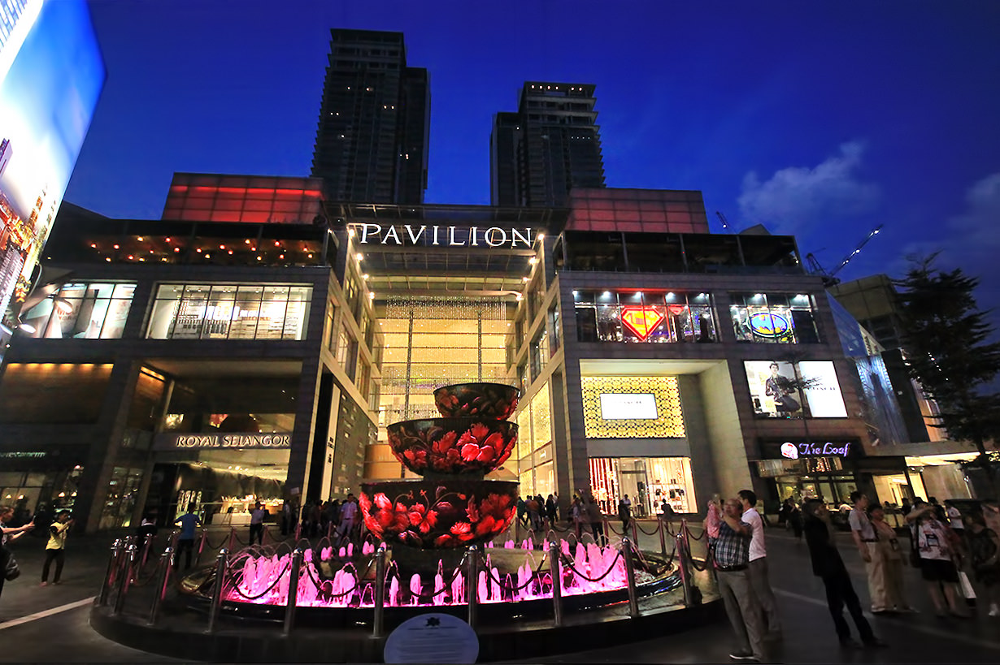

Shopping
Pavillion KL

Located at the centre of the uber trendy Bukit Bintang district, Pavilion Kuala Lumpur is a sprawling 1.37 million square feet complex comprised of three major components – a retail mall, an office block and two residential towers. Occupying prime real estate along Jalan Bukit Bintang, the mall was opened in 2007 and is noteworthy as the city centre’s trendiest and most popular shopping development.